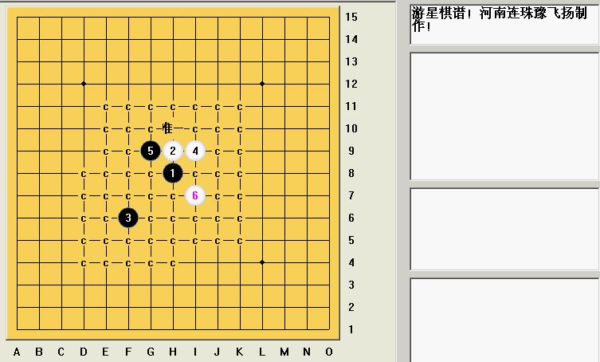

我见过的必胜棋谱（包括两打都必胜的）
#1 我见过的必胜棋谱（包括两打都必胜的） 作者：兔子哥哥 发表时间：2008-10-7 1:06:39
#2 Re:我见过的必胜棋谱（包括两打都必胜的） 作者：卖身打胎 发表时间：2008-10-15 11:57:58
期望原来跟失望是成正比的
#3 Re:我见过的必胜棋谱（包括两打都必胜的） 作者：夏百萧 发表时间：2008-10-15 14:53:37
这么大 能打开吗？#4 Re:我见过的必胜棋谱（包括两打都必胜的） 作者：逆刃 发表时间：2008-10-15 16:15:03
一般是打不开，所以还是精简谱好。#5 Re:我见过的必胜棋谱（包括两打都必胜的） 作者：gerbo 发表时间：2008-10-15 17:43:42
 很好很强大~~
很好很强大~~
#6 Re:我见过的必胜棋谱（包括两打都必胜的） 作者：gerbo 发表时间：2008-10-15 18:42:25
对了，花月的地毯我以前摆了下，发现也不是地毯，里面有漏点，大家可以多打打，也不可全相信地毯，做为参考资料很好。
#7 Re:我见过的必胜棋谱（包括两打都必胜的） 作者：gerbo 发表时间：2008-10-15 18:50:58
 游星一打的结论是什么了？
游星一打的结论是什么了？
#8 Re:我见过的必胜棋谱（包括两打都必胜的） 作者：越狱行辕 发表时间：2008-10-15 19:56:59
哥们谱真全能共享不啊#9 Re:Re:我见过的必胜棋谱（包括两打都必胜的） 作者：兔子哥哥 发表时间：2008-10-15 22:16:14
游星应该是白优势，走1打的话！

 游星棋谱.rar
游星棋谱.rar
游星棋谱
#10 Re:我见过的必胜棋谱（包括两打都必胜的） 作者：gerbo 发表时间：2008-10-16 1:48:19
 飞扬没告诉我，他有~~汗~~哈~谢谢兔子哥哥
飞扬没告诉我，他有~~汗~~哈~谢谢兔子哥哥
#11 Re:我见过的必胜棋谱（包括两打都必胜的） 作者：冷面孤煞 发表时间：2008-10-16 17:52:29
请问有疏星的谱吗？发上来看看OK？#12 Re:Re:我见过的必胜棋谱（包括两打都必胜的） 作者：越狱行辕 发表时间：2008-10-25 22:10:25
引用：
原文由 卖身打胎 发表于 2008-10-15 11:57:58 :期望原来跟失望是成正比的
我靠此话太经典了
#13 Re:我见过的必胜棋谱（包括两打都必胜的） 作者：松风竹月 发表时间：2008-11-18 9:31:15
幸好我期望原本就不大。。。。。。#14 Re:我见过的必胜棋谱（包括两打都必胜的） 作者：极地剑客 发表时间：2008-11-28 22:40:04
楼主的图确实正确~#15 Re:我见过的必胜棋谱（包括两打都必胜的） 作者：物是人非 发表时间：2008-12-15 17:57:42
这个局确实很经典但是要再多个丘月的终结就好了#16 Re:我见过的必胜棋谱（包括两打都必胜的） 作者：人生一局棋 发表时间：2008-12-27 23:27:48
学习中。。。。。
#17 Re:我见过的必胜棋谱（包括两打都必胜的） 作者：黄药师 发表时间：2009-6-28 20:36:45
口水流了一脸盆~~~~~#18 Re:Re:我见过的必胜棋谱（包括两打都必胜的） 作者：黑白子 发表时间：2009-6-29 11:28:55
引用：
原文由 Type 发表于 2009-6-29 9:55:32 :说下我的：
花月浦月彗星：简谱02年前完成。地毯谱大概是05年完成(之前还没solver用..)。参考日谱自己做的。
云月雨月：地毯大概是05~06年做的。参考了日谱和失落缘等老师公开的一些结论后自己做的。
金星：地毯07年做的。参考日谱部分定式，独立完成。
游星：一打白必胜的地毯07年做的。独立完成。
溪峡月：地毯06~07年做的。独立完成。
岚月：地毯最后完成是08年。立2是看了游戏人间老师公布的结论。山岚自己做的。新岚参考了江湖流传的一些结论。
-------以下是还没完成PPD3地毯的应该可以必胜的局-------
恒寒：简谱做了，难点都已解决，还没做完全部地毯。
明星：16眠3那个分支可概念胜，地毯没体力..其他分支08年完成。
新月：名新可以概念胜，没地毯完。新山07年独立完成，新岚08年完成。
名月：名新同上，名山最强6还有不少没做。其他地毯忘记什么时候完成的了。
残月：残山还有不少没做。其他4地毯06年完成。
山月：残山名山同上，其他弱4什么时候做的忘记了。
口水流了一水缸~~~~~~
共享一下！
#19 Re:Re:Re:我见过的必胜棋谱（包括两打都必胜的） 作者：方圆之外 发表时间：2009-6-29 11:36:18
引用：
原文由 兔子哥哥 发表于 2008-10-15 22:16:14 :游星应该是白优势，走1打的话！
游星棋谱
这七也必了。。
#20 Re:我见过的必胜棋谱（包括两打都必胜的） 作者：wd1988 发表时间：2009-6-29 12:07:16
游星白四直防地毯这条路线是困难的的，简单的是对称4地毯。
地毯谱在Type跳出来说他终结了之前，也是天涯独行客做的。但是Type率先发出了棋谱，有谱有真相，姑且认为他也做了，至于年份，他自己也说了，是09年之后，花半小时做出来的，刚刚一发贴，立马提前了一年，牛逼啊。。。
#21 Re:我见过的必胜棋谱（包括两打都必胜的） 作者：松风竹影 发表时间：2009-6-29 12:58:48
 我07年下半年也做出游星必胜，当时所有的点基本都测过了，，只是没弄成地毯，，在禁一下过几次，让人任意悔，送两个陌生人一份，骗人死全家，，老争这个做什么呢，只要是有点耐心的，用对称四手，普通的人都能拆完，04年子落棋谱不就有一个雏形
我07年下半年也做出游星必胜，当时所有的点基本都测过了，，只是没弄成地毯，，在禁一下过几次，让人任意悔，送两个陌生人一份，骗人死全家，，老争这个做什么呢，只要是有点耐心的，用对称四手，普通的人都能拆完，04年子落棋谱不就有一个雏形
#22 Re:我见过的必胜棋谱（包括两打都必胜的） 作者：≈★诚心★≈ 发表时间：2010-11-12 9:57:23
游星必胜#23 Re:我见过的必胜棋谱（包括两打都必胜的） 作者：岑小鱼 发表时间：2010-11-12 19:10:46
汗 原来是老帖子 曾经找了个游星对称4的终结谱 不过不详细 有些没拆出来就放一边了#24 Re:我见过的必胜棋谱（包括两打都必胜的） 作者：菜鸟欲飞 发表时间：2011-1-10 23:04:33
为什么我什么都看不到呢
嗨 人品问题
#25 Re:我见过的必胜棋谱（包括两打都必胜的） 作者：岳麓小棋后 发表时间：2011-1-11 11:59:59
帖子坏了,RP还行,有志要给你加威望了,LS